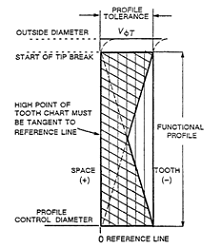
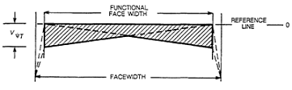
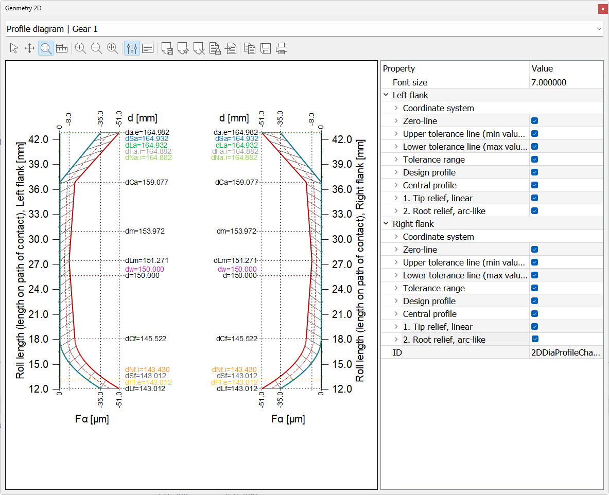
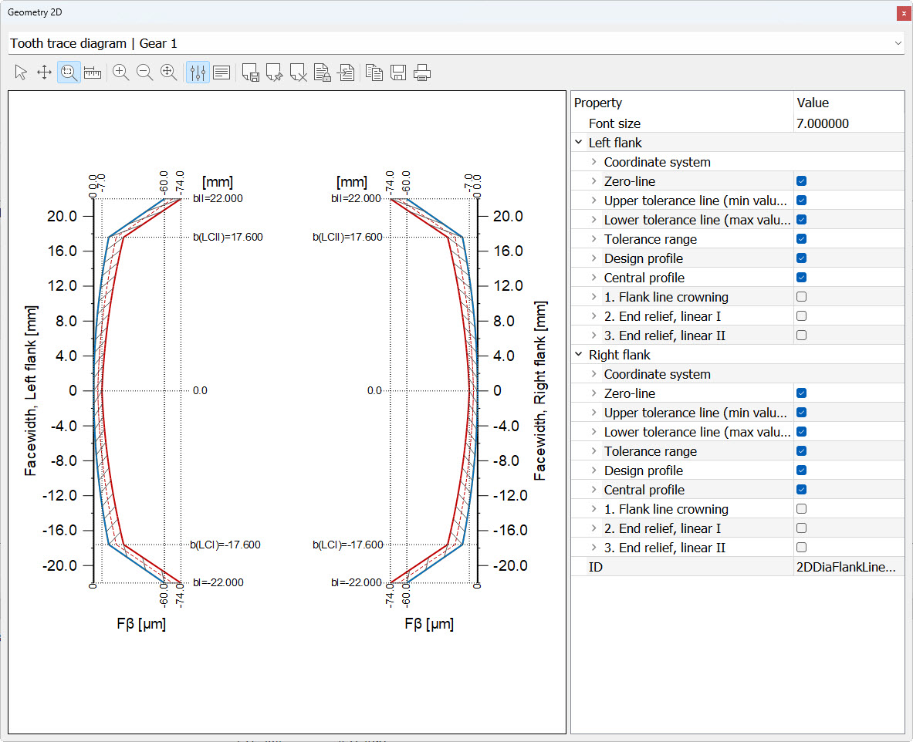

|
|
|


齿廓和齿面线简图
这些简图是通过将两条线沿公差带对角放置生成的，如 ANSI/AGMA 2000-A88（图1和图2）所述。


图 23.3：齿廓简图（左），齿面线简图（右）
在上述图中，VφΤ 是齿形公差，VψΤ 是齿向公差，它们分别对应 ISO 1328-1 中详述的齿廓总偏差（Fα）和螺旋线总偏差（Fβ）。
尽管每家公司都有自己的方法来创建齿廓和齿面线简图，但 AGMA 标准被公认为行业默认标准。ISO TR 10064-1（以及 ISO FDIS 21771）也包含齿廓和齿面线简图的一般描述，但没有关于构造方法的解释。
在 KISSsoft 中，齿廓和齿面线的修形在“”选项卡中定义，相关简图使用这些数据生成。

图 23.4：根据预定义修形得到的齿轮 1 的齿廓简图
齿廓简图的水平轴显示齿廓偏差值，垂直轴显示沿齿廓的坐标。可选择左侧垂直轴（滚角或啮合线长度）的不同值（ > > ）。右侧齿面的值始终以直径形式给出。用户还可以通过点击 > > 来指定公差带类型。如果选择 AGMA 20000-A88 中指定的公差带类型，简图将按照上述方法生成。如果将公差带类型设置为恒定，公差沿齿面长度或宽度保持不变。点击 复选框，以指定是否通常显示中心轮廓（见下文）。
右侧齿面的具体直径说明：
- dSa: 直径（在试验简图末端）
- dSf: 试验简图开始处的直径
- dCa: 齿顶处修形起始点
- dCf: 齿根处修形起始点
- dSm: d((L(dSa) + L(dSf))/2) : 滚动路径范围（啮合线）的中间点
注意：
齿廓简图位于齿宽中间。无法进行扭曲齿廓修形。
显示简图中的曲线：
- 绿线：1. 和 2. 的修改。
- 蓝线：基准齿廓（当前功能齿廓，用于检查，由修改曲线的总和生成）。
- 红线：通过从基准齿廓中减去齿廓总偏差得到的公差曲线。齿廓偏差值在主报告中列出。
- 红线（虚线）：中心轮廓，可作为加工的目标值，因为它位于基准齿廓与公差曲线之间。
- 灰线：公差范围，表示实际制造齿廓可以位于的范围（以剖面线区域表示）。
制造齿廓（含公差）应位于公差曲线与基准齿廓之间。
你可以使用属性来显示或隐藏各条图线或更改其颜色或图线类型。

图23.5：带预定义修形的齿轮1的齿面线简图
在图中，基准齿廓以蓝色显示，公差线以红色显示。水平轴显示沿齿面（齿宽）的坐标，垂直轴显示根据通常工业标准规定的齿面允许量。螺旋线总偏差值 Fβ 在主报告中给出。
制造齿面线（含公差）应位于公差曲线与基准齿面线之间。
在此图中，你看到的是沿齿面线的齿面曲率半径。这些与法向力都是赫兹压力的关键值。
图中显示齿面的法向角。齿形上每个点都有一个法线。
Profile and flank line diagram
These diagrams are generated by placing two lines diagonally over the tolerance band, as described in ANSI/AGMA: 2000-A88 (Figures 1 and 2).
Figure 23.3: Profile diagram (left), flank line diagram (right)
In the figures shown above, VφΤ is the profile tolerance and VψΤ is the tooth alignment tolerance which correspond to the total profile deviation (Fα) and the tooth helix deviation (Fβ) as detailed in ISO 1328-1.
Although every company has its own method of creating profile and flank line diagrams, the AGMA standard is recognized as the default standard in the industry. ISO TR 10064-1 (and ISO FDIS 21771) also include a general description of profile and flank line diagrams, however without any explanations about the construction method.
In KISSsoft, the profile and flank line modifications are defined in the tab. The relevant diagrams are then generated using this data.
Figure 23.4: Profile diagram for gear 1 according to the predefined modifications
The horizontal axis of the profile diagram shows the profile deviation values and the vertical axis shows the coordinates along the profile. You can select different values for the left-hand vertical axis (roll angle or path of contact length) ( > > ). The values for the right-hand flank are always given as the diameter. You can also specify the tolerance type by clicking on > > . If you select the tolerance band type as specified in AGMA 20000-A88, the diagrams are generated according to the method mentioned above. If you set the tolerance band type to constant, the tolerance remains constant along the length or the width of the tooth flank. Click on the checkbox to specify whether the central profile (see below) should usually be displayed.
Description of the specific diameter of the right-hand vertical flank:
- dSa: Diameter at the end of the test diagram
- dSf: Diameter at the start of the test diagram
- dCa: Start of modification at tip
- dCf: Start of modification at root
- dSm: d((L(dSa) + L(dSf))/2) : Middle of the rolling path range (path of contact)
Note:
The profile diagram is in the middle of the facewidth. The Twist profile modification is not possible.
Show curves in the diagram:
- Green line: Modifications of 1. and 2. .
- Blue line: Reference profile (current function profile used for checking and generated from the total of the modified curves).
- Red line: Tolerance curve generated by subtracting the total profile deviation from the reference profile. The profile deviation values are listed in the main report.
- Red line, dashed: Central profile, which can be entered as the target value for processing because it lies in the middle between the reference profile and the tolerance curve.
- Gray line: Tolerance range, which shows the range (as a crosshatched area) in which the actual manufacturing profile can lie.
The manufacturing profile (with tolerance) should lie between the tolerance curve and the reference profile.
You can use the properties to display or hide the individual lines or change their colors or line type.
Figure 23.5: Flank line diagram for gear 1 with the predefined modifications
In the figure, the reference profile is shown in blue and the tolerance line is shown in red. The horizontal axis shows the coordinates along the flank line (facewidth) and the vertical axis shows the flank allowance as specified in the usual industrial conventions. The value of the total tooth trace deviation Fβ is given in the main report.
The manufacturing flank line (with tolerances) should lie between the tolerance curve and the reference flank line.
In this graphic you see the flank curvature radii along the flank line. Along with the normal force, these are critical values for Hertzian pressure.
The normal angle to the flank is shown in this graphic. Every point on the tooth form has a normal.